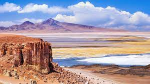
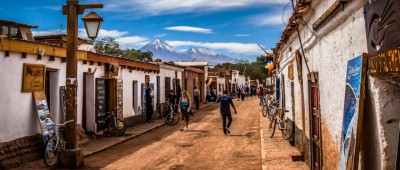

San Pedro de Atacama
San Pedro de Atacama
Un lugar muy lindo
San Pedro de Atacama es una ciudad ubicada en una alta meseta arida en la Cordillera de los Andes del noreste chileno.
Dentro de las mejores atracciones del lugar se encuentra el Valle de Luna, el cual se caracteriza por su bello paisaje.
Es un buen destino para visitar con amigos y familias, hay muchas actividades para todo tipo de gustos.
Existen muchisimos hostales y hoteles a diferentes precios, por lo que tu estadia puede facilmente ajustarse a tu presupuesto.


- Información
- Qué hacer
- Programas y precios